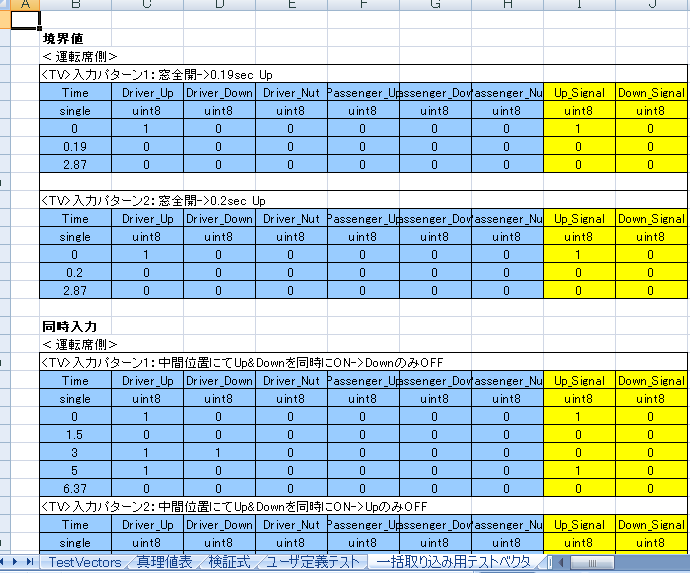
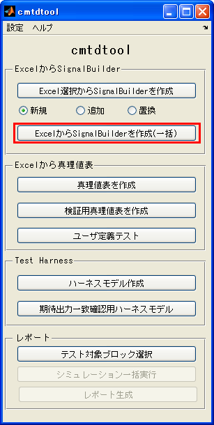
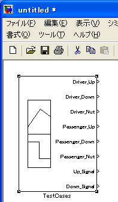
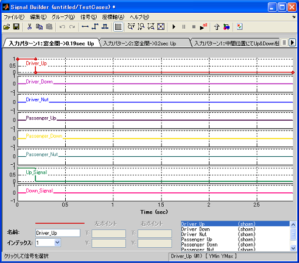

Excel上のテストベクタをSignalBuilderブロックに一括出力
- MATLAB R2007a以降対応
Contents
注意
本機能と類似の機能がMATLAB R2010bよりSimulinkのSignalBuilderブロックで利用可能です。 本ツールの作成者は MATLAB R2010bで提供される製品の機能の利用を 強く推奨 致します。 なお、R2010bで作成されたSignalBuiderブロックを下位バージョンにバックポートすることも可能です。
ドキュメント掲載箇所へのリンク
http://www.mathworks.com/help/toolbox/simulink/ug/f15-109640.html#bskwu0h-1
概要
(1) 一括出力したいテストベクタを含むExcelシートを開く
現在開いているExcelファイルのシート全体が一括取り込みの対象となります。 特定のセルを選択する必要はありません。

(2) ExcelからSignalBuilderを作成(一括) ボタンをクリック

(3) SignalBuilderブロックが作成される

SinalBuilderブロックには該当のExcelシートに記述された信号が一括して 取り込まれる

テストベクタ記述ルール
- 1行目： 左端のセルに 「<TV>テストベクタ名」 を記述。最初の文字は「<TV>」(すべて半角文字)であること。 続く文字がSignalBuilderブロックのグループ名に反映されます。 このキーワード「<TV>」がテストベクタの始まりを示します。
- 2行目： 時間、信号名1, 信号名2,... を記述
- 3秒目： データタイプ名を記述 (double, single, int8, uint8, int16, uint16, int32, uint32, boolean) ※現時点で固定小数点には未対応
- 4行目以降： 時系列データを記述
- 次のテストベクタを記述します。前テストベクタの時系列データと新テストベクタの間には、空行や文字列のみを含む行を 含むことができます。
注意事項
- 本機能と類似の機能がMATLAB R2010bよりSimulinkのSignalBuilderブロックで利用可能です。 本ツールの作成者は MATLAB R2010bで提供される製品の機能の利用を強く推奨致します。 なお、R2010bで作成されたSignalBuiderブロックを下位バージョンにバックポートすることも可能です。 ドキュメント掲載箇所へのリンク http://www.mathworks.com/help/toolbox/simulink/ug/f15-109640.html#bskwu0h-1
- 前テストベクタの時系列データと新テストベクタの間に数値データ(半角数字のみが含まれるセル)が含まれると、 正しく取り込みができません。空行か文字列のみを含むようにして下さい。
- 時間および信号列以外の行に文字および数値データを含まないようにして下さい。 本ツールは、各列に対し、1つでも文字・数値が含まれると、時間および信号が含まれる有効列だと 判断し、インポートしようとします。
- データタイプ名はSignalBuider上では現在使用されていません。この機能を使用した際にMATLABワークスペース上に作成される変数 simdata において使用されています。
SignalBuilderからExcelへのリンク機能
Simulink Verification and Validation のライセンスが利用中のMATLABに存在する場合、 SignalBuilderブロックに作成された信号グループに対し、Excelの選択箇所へのリンクが 自動的に設定されます。
SignalBuilderブロックから、その元となるExcelの選択箇所を確認するためには、 SignalBuilderブロック上の「検証設定の表示」ボタン(下図赤枠)をクリックし、 「Requirements」欄に表示されているラベル名で右クリック→「View」を選択します。 (下図緑枠)

デモの実行方法
- cmtdtoolフォルダ内 cmtdtool_sampledata.xls を開く
- 「一括取り込み用テストベクタ」タブを開く。
- cmtdtool 上で「ExcelからSignalBuilderを作成(一括)」ボタンをクリックする
- 上記で作成されたSignalBuilderブロック上にExcelの時系列データが一括で取り込まれていることを確認する
- コマンドウィンドウから以下を実行することでGUIと同様な操作が実行可能であることを確認
xls2SignalBuilder_multiple('cmtdtool_sampledata.xls','一括取り込み用テストベクタ',[],[]);